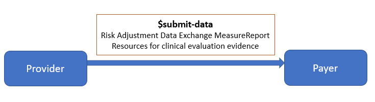

Da Vinci Risk Adjustment Implementation Guide
3.0.0-ballot - STU 3.0.0-ballot

Da Vinci Risk Adjustment Implementation Guide
3.0.0-ballot - STU 3.0.0-ballot

Da Vinci Risk Adjustment Implementation Guide - Local Development build (v3.0.0-ballot) built by the FHIR (HL7® FHIR® Standard) Build Tools. See the Directory of published versions
| Page standards status: Trial-use |
Once the Risk Adjustment Coding Gap Report has been constructed, it is sent to the intended recipient and filtered to ensure that only germane HCC gaps are made available to providers. The Provider (or a software program acting on behalf of the Provider) determines whether the gap is currently valid, and whether the requested encounter data evidence exists to close the gap. Three courses of action are available to the Provider (or a software program acting on behalf of the Provider):
Just as the Payer is responsible for generating HCC gaps, so too are they responsible for resolving them. The Payer ingests the valid encounter data supplied by the Provider that supports gap closure and gap invalidation and updates the gap status based on the clinical evaluation evidence. It is recommended that the Payer record the date when the gap status change occurs so that providers may receive credit for their performance (e.g., if the Payer incentivizes providers for early closure of HCC gaps prior to the Medicare Advantage September sweeps). At this time the Payer will perform any necessary backend processes before closing the loop with the generation of a new HCC gap list, and the cycle begins anew. While these payer backend processes are largely outside the scope of this implementation guide (IG), there are times when they can impact gap data. One of these is the process of submitting risk adjustment data to government agencies (e.g., Encounter Data Processing System (EDPS) in the case of MA risk adjustment; the Edge Server in the case of ACA risk adjustment).
It is possible that an HCC gap closure may not be confirmed by these agencies during the submission process, either because the HCC is rejected or because of a submission error. Either way, a situation may arise whereby the HCC gap is closed from the Payer’s perspective, but the data has not been accepted from the government’s perspective. This can place the Payer in a quandary, since the Risk Adjustment IG recommends that the Payer close the loop by sending the Provider confirmation that their gap closure or invalidation request has been processed. If the Payer provides this confirmation, then the government agency subsequently rejects the encounter data submission, the Payer might need to reopen the HCC gap – and this can lead to provider abrasion. It is up to the Payer to decide how to handle this situation, but the Risk Adjustment IG has provided an additional evidenceStatus value of pending to indicate to the Provider that the Payer has received their gap closure request, and is in the process of confirming that closure with the government agency. The Payer will subsequently change the evidenceStatus to open-gap or closed-gap depending on the resolution of that submission.
The Actors involved in the Submit Data to Payer phase are Provider and Payer.

If the Provider identifies the need of closing or invalidating a coding gap or simply needs to provide more up to date patient data to the Payer, they will create a Risk Adjustment Data Exchange MeasureReport and use the $submit-data operation to send that data to the Payer. The evaluatedResource element on a Risk Adjustment Data Exchange Measure Report can be used to reference any clinical evaluation evidence that will need to be submitted to the Payer. For example, if the Provider sends a patient’s Consolidated Clinical Document Architecture (C-CDA) document as valid encounter data, the evaluatedResource will be a reference to a DocumentReference resource for the C-CDA document. For the $submit-data operation, the measureReport parameter will be the Risk Adjustment Data Exchange MeasureReport and the resource parameter will be the DocumentReference resource for the C-CDA and other data-of-interest being submitted. In the risk adjustment use case scenario, the effect of invoking the $submit-data operation is that the submitted data is posted to the receiving system and can be used for subsequent risk adjustment coding gap evaluation and report generation.
The Risk Adjustment Data Exchange MeasureReport provides a way to link the submitted data to the original Payer generated coding gap report. Provider can provide the unique id of the original Payer generated coding gap report using the payerCodingGapReportId. The unique id is the MeasureReport.id from the Risk Adjustment Coding Gap Report. The Provider could also include the Condition Categories that they intend to close and/or invalidate from the original Risk Adjustment Coding Gap Report in the Data Exchange MeasureReport by populating the MeasureReport.group.
After the Payer receives and processes the clinical evaluation evidence data submitted by the Provider, the data will then be used for the next coding gap evaluation and coding gap reports generation. If Provider identifies issues with the gaps shown on the new coding gap reports, they will use the data submission process again to submit proper data and documentation to address the issues.

IG © 2021+ HL7 International / Clinical Quality Information.
Package hl7.fhir.us.davinci-ra#3.0.0-ballot based on FHIR 4.0.1.
Generated
2026-03-08
Links: Table of Contents |
QA Report
| Version History |
 |
Propose a change
|
Propose a change